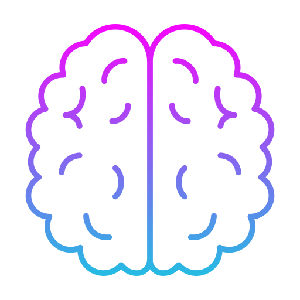

At Sweekar Special School, our curriculum is flexible and individualized, focusing on academics, life skills, and personal growth.
Every child learns differently, so we design their learning journey based on their abilities, strengths, and needs.
Core Learning Areas
Language & Communication
Numeracy & Math Skills
Daily Living Skills (self-care, home activities)
Social Skills & Behavioral Development
Physical Education & Yoga
Arts, Music, and Dance
Levels / Groups
Students are grouped by ability rather than age:
Early Learners
Primary
Secondary
Vocational
Teaching Methods
We follow activity-based and hands-on learning methods, integrating therapies into lessons to make learning engaging and effective.

Special Education
At Sweekar Special School, our Special Education program is designed to nurture the abilities of every child through an individualized and compassionate approach. We understand that each learner has unique strengths, challenges, and learning styles, which is why we move beyond traditional methods to provide adaptive teaching strategies that make education accessible and meaningful. Our classrooms emphasize not just academic development, but also communication, social skills, and emotional growth. By creating a safe and supportive environment, we empower students to build confidence, express themselves, and achieve progress at their own pace.
Special Education at our school goes hand-in-hand with therapeutic support, ensuring a truly holistic model of learning. Along with academics, students receive guidance in daily living skills, behavior management, and independence training, supported by therapies such as speech, occupational, and physiotherapy whenever required. We also focus on activity-based and hands-on learning, which makes lessons engaging and practical. Students are grouped according to ability rather than age, so that they learn alongside peers with similar needs, fostering inclusion and collaboration. Through this comprehensive approach, our goal is to help every child grow academically, socially, and personally, equipping them with skills that prepare them not only for education but also for life beyond school.
Individualized Education Program (IEP)
At Sweekar Special School, we understand that no two children learn in exactly the same way.
Our Individualized Education Program (IEP) is designed to meet each student’s unique needs, learning style, and pace.
Developed collaboratively by our special educators, therapists, and parents, the IEP serves as a personalized roadmap for academic, social, emotional, and functional growth.
It includes clearly defined short-term and long-term goals, strategies to achieve them, and the support systems required—be it therapies, classroom accommodations, or assistive technologies.
The plan is flexible, allowing us to adapt and evolve it as the child progresses, ensuring that their education always matches their current abilities and aspirations.
A strong IEP begins with comprehensive individualized assessments that guide its creation and refinement. These assessments help us identify each child’s strengths, areas for improvement, and the types of support they need. We conduct:
Baseline evaluations in academics, communication, motor skills, and behavior.
Therapy-specific screenings to determine the need for speech, occupational, physiotherapy, or behavioral interventions.
Functional skills assessments to measure daily living, self-care, and problem-solving abilities.
Regular progress reviews—typically every quarter—to adjust goals and methods based on results.
This cycle of assessment, planning, and review ensures that every child receives
targeted, achievable, and meaningful learning experiences that not only improve skills but also build confidence and independence.
NIOS Support
At Sweekar Special School, we recognize that every learner deserves the opportunity to access formal education at their own pace and in a way that suits their abilities. That’s why we provide dedicated support for the National Institute of Open Schooling (NIOS) curriculum. NIOS offers a flexible learning system that allows students to study subjects of their choice, prepare for recognized examinations, and progress academically without the rigid constraints of traditional schooling. This flexibility makes it an ideal pathway for children with diverse learning needs, enabling them to balance academics with therapies, life skills training, and extracurricular activities.
Our NIOS support includes structured academic guidance, personalized lesson plans, and regular practice sessions tailored to each student’s level and pace. We prepare learners not just for the examinations, but for real-world application of knowledge, integrating concepts into everyday life for better understanding and retention. Teachers work closely with parents and therapists to ensure that learning goals align with the student’s overall development plan. By successfully completing NIOS levels, students gain recognized qualifications that open doors to higher education, vocational training, and employment opportunities, empowering them to step confidently into the next stage of their journey.
 Individualized Education Program (IEP)
Individualized Education Program (IEP)